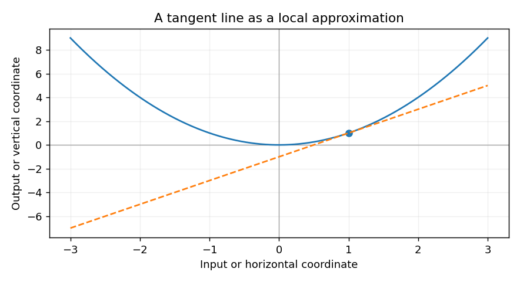
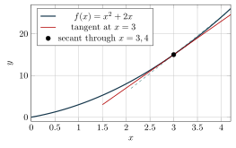
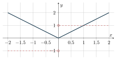
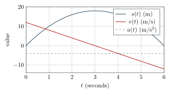
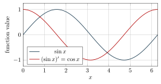
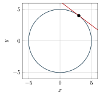
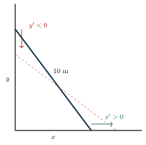
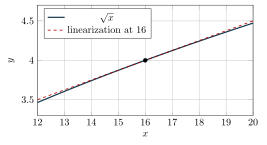
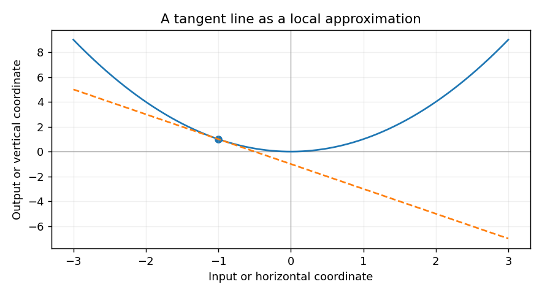

Differentiation
Chapter overview. The derivative transforms the limit concept from Chapter 2 into a quantitative description of instantaneous change. Its geometric interpretation is the slope of a tangent line; its applied interpretation is a rate measured per unit of the independent variable. Differentiation also provides a way to construct local approximations, understand motion, and analyze coupled quantities. We begin with definitions and proofs, then build efficient differentiation rules, explore their graphs, and use paired R and Python calculations to check and interpret results.
Learning outcomes. After this chapter, students should be able to (1) derive a tangent slope from a difference quotient; (2) distinguish continuity from differentiability; (3) apply sum, product, quotient, power, chain, trigonometric, exponential, logarithmic, and inverse-function rules; (4) compute implicit and higher derivatives; (5) interpret velocity and acceleration; (6) formulate and solve related-rates problems; (7) construct and assess linear approximations; and (8) implement and critically evaluate symbolic and numerical derivatives in R and Python.
Visual concept investigation
What a derivative communicates
The derivative \(f\prime(a)\) is a local rate of change. Its units are output units divided by input units. The tangent line \(L(x)=f(a)+f\prime(a)(x-a)\) uses that local rate to predict nearby values, but the approximation typically becomes less reliable farther from \(a\). This distinction is essential in applied modeling.

Guided investigation. For \(f(x)=x^2\) at \(a=1\), find \(L(x)\) and compare \(L(1.1)\) with \(f(1.1)\). Explain the sign of the error using concavity.
Interactive investigation: Secant and tangent slopes
Tangents and the derivative at a point
A secant line through \((a,f(a))\) and \((a+h,f(a+h))\) has slope \[m_{\mathrm{sec}}=\frac{f(a+h)-f(a)}{h},\qquad h\ne0.\] As \(h\) shrinks, the second point approaches the first. If the secant slopes approach a finite number, that number is the slope of the tangent line.
Definition — Derivative at a point. If the following finite limit exists, the derivative of \(f\) at \(a\) is \[f'(a)=\lim_{h\to0}\frac{f(a+h)-f(a)}{h}.\] Equivalently, \(f'(a)=\lim_{x\to a}[f(x)-f(a)]/(x-a)\).
Example — A derivative from first principles. For \(f(x)=x^2+2x\), find \(f'(3)\) and the tangent line at \(x=3\).
Solution. Since \(f(3)=15\), \[\frac{f(3+h)-f(3)}h=\frac{(3+h)^2+2(3+h)-15}{h}=8+h.\] Taking \(h\to0\) gives \(f'(3)=8\). The tangent line is \(y-15=8(x-3)\), or \(y=8x-9\). The derivative has units of output units per input unit.

Example — A nonpolynomial derivative. Use the definition to differentiate \(f(x)=\sqrt{x}\) at \(a>0\).
Solution. Rationalizing gives \[\frac{\sqrt{a+h}-\sqrt a}{h}=\frac1{\sqrt{a+h}+\sqrt a}\longrightarrow\frac1{2\sqrt a}.\] The restriction \(a>0\) is essential for a two-sided derivative on an open interval.
Remark. The tangent is the best local linear approximation, not necessarily a line touching the curve at only one point. A tangent can cross the graph.
From a numerical pattern to a mathematical conclusion
Suppose a table of secant slopes approaches \(8\) as \(h\) gets smaller. This is evidence for a derivative, but it is not a proof: a finite table samples only finitely many nonzero values of \(h\). In the preceding example, the algebraic identity \[\frac{f(3+h)-f(3)}{h}=8+h\quad(h\ne0)\] justifies the limit exactly. Throughout this book, we distinguish three complementary forms of evidence: an exact mathematical derivation, a visualization that builds intuition, and a numerical experiment that checks a prediction.
Example — A tangent line is a local prediction. A vehicle’s distance traveled is \(s(t)=t^2+2t\) meters. At \(t=3\) seconds, estimate the additional distance traveled in the next \(0.1\) second using the tangent line, and compare with the exact change.
Solution. Since \(s'(3)=8\) m/s, the tangent estimate is \(8(0.1)=0.8\) m. The exact change is \(s(3.1)-s(3)=0.81\) m. The approximation underestimates the change by \(0.01\) m because the slope increases with time.
The derivative as a function; differentiability
Repeating the limit calculation at every eligible input defines the derivative function \(f'(x)\). For \(f(x)=x^2\), \[f'(x)=\lim_{h\to0}\frac{(x+h)^2-x^2}{h}=\lim_{h\to0}(2x+h)=2x.\] Thus \(f'(x)\) is negative to the left of zero, zero at zero, and positive to the right: the derivative graph encodes the slope behavior of the original function.
Theorem — Differentiability implies continuity. If \(f\) is differentiable at \(a\), then \(f\) is continuous at \(a\).
Proof. For \(x\ne a\), write \(f(x)-f(a)=\frac{f(x)-f(a)}{x-a}(x-a)\). As \(x\to a\), the first factor tends to \(f'(a)\) and the second to zero. Hence \(f(x)\to f(a)\).
The converse fails: continuity alone does not guarantee a derivative.
Example — A corner. Show that \(f(x)=|x|\) is continuous but not differentiable at zero.
Solution. Since \(|x|\to0=f(0)\), continuity holds. But \[\frac{|h|-0}{h}=\begin{cases}1,&h>0,\\-1,&h<0,\end{cases}\] so the one-sided derivative limits disagree. The derivative does not exist at zero.

Other reasons a derivative can fail
A derivative may fail at a jump or hole (because differentiability implies continuity), a corner (unequal one-sided slopes), a cusp (slopes diverge with opposite signs), or a vertical tangent (unbounded slope). For example, \(f(x)=x^{1/3}\) is continuous at zero but has a vertical tangent there: its difference quotient \(h^{-2/3}\) grows without bound.
Higher derivatives and notation
The second derivative \(f''=(f')'\) measures the rate of change of slope. For a position \(s(t)\), velocity is \(v=s'\) and acceleration is \(a=s''\). Leibniz notation \(dy/dx\), \(d^2y/dx^2\) and prime notation are complementary; units matter when interpreting rates.
Differentiation rules
The derivative definition proves basic rules, which save repeated limit calculations.
Theorem — Derivative of a constant. If \(f(x)=c\) for a constant \(c\), then \(f'(x)=0\) at every interior point of its domain.
Proof. The difference quotient is \((c-c)/h=0\) for every \(h\ne0\), and hence its limit is zero.
Geometric interpretation. A constant function is a horizontal line. Because its output does not change, every secant slope and every tangent slope is zero.
Theorem — Constant-multiple and sum/difference rules. If \(u\) and \(v\) are differentiable at \(x\) and \(c\) is constant, then \[\frac{d}{dx}[cu(x)]=cu'(x),\qquad \frac{d}{dx}[u(x)\pm v(x)]=u'(x)\pm v'(x).\]
Proof. Write the difference quotient for each expression. Constants factor out of limits, and the limit of a sum is the sum of the limits when both limits exist.
Example — Separating the rules. Differentiate \(5x^2-3\sin x+7\) once the power and sine rules have been established.
Solution. Differentiate term by term, carrying the coefficients: \(10x-3\cos x+0\). The constant term contributes no change.
Theorem — Power rule. For every positive integer \(n\), \[\frac{d}{dx}x^n=nx^{n-1}.\] The same formula holds for negative integer powers wherever \(x\ne0\). Later we extend the formula to real exponents on domains where the powers are defined and differentiable.
Why the hypotheses matter. For \(x^{-2}\), the rule gives \(-2x^{-3}\) only for \(x\ne0\); the function itself is undefined at zero. For noninteger powers, the real domain may be more restricted.
Proof — Proof of the positive integer power rule. For \(n\in\mathbb N\), the binomial expansion gives \((x+h)^n=x^n+nx^{n-1}h+\binom n2x^{n-2}h^2+\cdots+h^n\). Divide the difference by \(h\) and let \(h\to0\). Only \(nx^{n-1}\) remains.
Example — Polynomial differentiation. Find the first and second derivatives of \(p(x)=4x^5-3x^3+7x-9\).
Solution. \(p'(x)=20x^4-9x^2+7\) and \(p''(x)=80x^3-18x\). Each term is differentiated separately.
Theorem — Product rule. If \(u\) and \(v\) are differentiable at \(x\), then \[\frac{d}{dx}[u(x)v(x)]=u'(x)v(x)+u(x)v'(x).\]
Reasoning. When two quantities change together, the change in their product includes a contribution from each factor. Differentiating both factors and multiplying the derivatives would miss these contributions.
Proof — Product rule. Insert and subtract \(u(x+h)v(x)\) in the numerator of the product’s difference quotient. Rearrangement yields \[\frac{u(x+h)v(x+h)-u(x)v(x)}h=u(x+h)\frac{v(x+h)-v(x)}h+v(x)\frac{u(x+h)-u(x)}h.\] Differentiability implies continuity, so the limit is \(uv'+vu'\).
Theorem — Quotient rule. If \(u\) and \(v\) are differentiable at \(x\) and \(v(x)\ne0\), then \[\frac{d}{dx}\left[\frac{u(x)}{v(x)}\right] =\frac{v(x)u'(x)-u(x)v'(x)}{[v(x)]^2}.\]
Proof. Apply the product rule to \(u(x)[v(x)]^{-1}\) and the derivative of a reciprocal, or form a common denominator in the quotient’s difference quotient. The restriction \(v(x)\ne0\) is necessary because the original quotient is undefined otherwise.
Memory aid. Denominator times derivative of numerator, minus numerator times derivative of denominator, all divided by denominator squared. Check the sign with \(1/x\), whose derivative is negative for \(x\ne0\).
Example — Product rule in context. A revenue model is \(R(q)=q(120-2q)\) dollars. Find the marginal revenue at \(q=20\).
Solution. \(R'(q)=1(120-2q)+q(-2)=120-4q\), so \(R'(20)=40\) dollars per additional unit, in the local marginal sense.
Example — Quotient rule. Differentiate \(f(x)=(x^2+1)/(x-1)\), \(x\ne1\).
Solution. \(f'(x)=[2x(x-1)-(x^2+1)]/(x-1)^2=(x^2-2x-1)/(x-1)^2\).
Remark. Common mistake: \((uv)'\ne u'v'\) and \((u/v)'\ne u'/v'\). A simple test with \(u=v=x\) disproves both shortcuts.
Choosing the correct differentiation rule
Before differentiating, identify the structure of the expression. A sum such as \(x^3+\sin x\) is differentiated term by term; a product such as \(x^3\sin x\) requires the product rule; a quotient such as \(\sin x/x\) requires the quotient rule; and a composition such as \(\sin(x^3)\) requires the chain rule. The outermost operation determines the first rule to apply.
Example — Four similar-looking expressions. Differentiate \(x^2+e^x\), \(x^2e^x\), \(x^2/e^x\), and \(e^{x^2}\).
Solution. \[\begin{aligned} \frac{d}{dx}(x^2+e^x)&=2x+e^x,\\ \frac{d}{dx}(x^2e^x)&=2xe^x+x^2e^x,\\ \frac{d}{dx}(x^2e^{-x})&=e^{-x}(2x-x^2),\\ \frac{d}{dx}e^{x^2}&=2xe^{x^2}. \end{aligned}\] The third expression was rewritten before differentiation to avoid unnecessary algebra.
Motion and other rates of change
Suppose position \(s(t)\) is measured in meters and time \(t\) in seconds. Average velocity over \([t,t+h]\) is \([s(t+h)-s(t)]/h\); instantaneous velocity is its limit \(s'(t)\), measured in m/s. Speed is \(|v(t)|\), not \(v(t)\), because velocity includes direction.
Example — Position, velocity, acceleration. Let \(s(t)=12t-2t^2\) for \(0\le t\le6\). Find velocity and acceleration, the instant when the particle changes direction, and displacement on \([0,6]\).
Solution. \(v(t)=12-4t\) m/s and \(a(t)=-4\) m/s\(^2\). The velocity changes from positive to negative at \(t=3\) s. Displacement is \(s(6)-s(0)=0\) m, although total distance is \([s(3)-s(0)]+[s(3)-s(6)]=18+18=36\) m.

Units and model validity
If \(C(t)\) is a concentration in mg/L, then \(C'(t)\) is mg/(L hour) when \(t\) is in hours. A negative derivative describes a declining concentration; it does not imply a negative concentration. Model derivatives should be interpreted only over the domain where the model is meaningful.
Example — Cooling rate. A simplified temperature model is \(T(t)=22+58e^{-0.18t}\), with \(t\) in minutes. Find the rate of change at \(t=5\).
Solution. \(T'(t)=-10.44e^{-0.18t}\) degrees Celsius per minute, so \(T'(5)\approx-4.245\) \(^\circ\)C/min. The temperature is falling at that instant.
Trigonometric derivatives
Angles must be measured in radians for the familiar derivative formulas. Using the fundamental trigonometric limits from Chapter 2 and the addition identities, \[\frac{d}{dx}\sin x=\cos x,\qquad \frac{d}{dx}\cos x=-\sin x.\] From these and the quotient rule, \[(\tan x)'=\sec^2x,\quad (\cot x)'=-\csc^2x,\quad (\sec x)'=\sec x\tan x,\quad (\csc x)'=-\csc x\cot x.\]
Example — A vibrating component. The displacement of a vibrating sensor is \(s(t)=0.04\cos(6\pi t)\) meters. Determine velocity and acceleration.
Solution. \(v(t)=-0.24\pi\sin(6\pi t)\) m/s and \(a(t)=-1.44\pi^2\cos(6\pi t)\) m/s\(^2\). The angular frequency is \(6\pi\) radians/s, so the period is \(1/3\) s.

The chain rule
When a function is composed of an outer function and an inner function, both layers contribute to the rate of change.
Theorem — Chain rule. If \(u=g(x)\) is differentiable at \(x\) and \(f\) is differentiable at \(u=g(x)\), then \[\frac{d}{dx}f(g(x))=f'(g(x))g'(x).\]
Example — Nested powers. Differentiate \(y=(3x^2-2x+5)^7\).
Solution. Let \(u=3x^2-2x+5\). Then \(dy/du=7u^6\) and \(du/dx=6x-2\), so \(dy/dx=7(3x^2-2x+5)^6(6x-2)\).
Example — A trigonometric composition. Differentiate \(y=\sin(x^2+1)\).
Solution. The outer derivative is cosine; multiply by the inner derivative \(2x\): \(y'=2x\cos(x^2+1)\).
Example — Nested exponential decay. If \(C(t)=12\exp[-0.3(t+1)^2]\), compute \(C'(t)\).
Solution. \(C'(t)=12e^{-0.3(t+1)^2}[-0.6(t+1)]=-7.2(t+1)e^{-0.3(t+1)^2}\).
Remark. A useful diagnostic is to identify the inner function in words before writing its derivative. The derivative of \(\sin(5x)\) is \(5\cos(5x)\), not \(\cos(5x)\).
Implicit differentiation
Some curves are defined by relations \(F(x,y)=0\) rather than explicit formulas \(y=f(x)\). If \(y\) depends on \(x\), differentiate both sides with respect to \(x\), remembering that differentiating a term involving \(y\) requires the chain rule.
Example — Circle tangent. Find the slope of the tangent to \(x^2+y^2=25\) at \((3,4)\).
Solution. Differentiate: \(2x+2y(dy/dx)=0\), hence \(dy/dx=-x/y\) when \(y\ne0\). At \((3,4)\), the slope is \(-3/4\) and the tangent line is \(y-4=-\tfrac34(x-3)\).
Example — A mixed-product relation. For \(x^2+xy+y^2=7\), find \(dy/dx\) wherever the denominator is nonzero.
Solution. Differentiate to get \(2x+(y+xy')+2yy'=0\). Collect \(y'\) terms: \((x+2y)y'=-(2x+y)\), so \(y'=-(2x+y)/(x+2y)\).

Derivatives of inverse, exponential, and logarithmic functions
For an invertible differentiable function \(f\) with \(f'(x)\ne0\), the inverse derivative follows by differentiating \(f(f^{-1}(y))=y\): \[(f^{-1})'(y)=\frac1{f'(f^{-1}(y))}.\] The logarithm and exponential functions satisfy \[\frac{d}{dx}e^x=e^x,\quad \frac{d}{dx}\ln x=\frac1x\ (x>0),\quad \frac{d}{dx}a^x=a^x\ln a\ (a>0),\] \[\frac{d}{dx}\log_a x=\frac1{x\ln a},\qquad \frac{d}{dx}x^r=rx^{r-1}\quad(x>0,\ r\in\mathbb R).\]
Example — Logarithmic chain rule. Differentiate \(f(x)=\ln(1+x^2)\).
Solution. Since \(1+x^2>0\) for all real \(x\), \(f'(x)=2x/(1+x^2)\) on \(\mathbb R\).
Example — Logarithmic differentiation. Differentiate \(y=x^x\) for \(x>0\).
Solution. Taking logarithms, \(\ln y=x\ln x\). Differentiate: \(y'/y=\ln x+1\). Thus \(y'=x^x(\ln x+1)\).
Example — Inverse derivative without an explicit inverse. Let \(f(x)=x^3+x+1\). Find \((f^{-1})'(3)\).
Solution. Since \(f(1)=3\) and \(f'(x)=3x^2+1>0\), the inverse exists. Then \((f^{-1})'(3)=1/f'(1)=1/4\).
Inverse trigonometric functions
The inverse sine and tangent derivatives are \[\frac{d}{dx}\arcsin x=\frac1{\sqrt{1-x^2}}\quad(|x|<1),\qquad \frac{d}{dx}\arctan x=\frac1{1+x^2}.\] Also \((\arccos x)'=-1/\sqrt{1-x^2}\) on \((-1,1)\). These formulas follow from implicit differentiation and careful attention to the principal ranges.
Example — Inverse tangent and a scaled input. Differentiate \(f(x)=\arctan(2x-1)\).
Solution. Apply the chain rule: \(f'(x)=2/[1+(2x-1)^2]\).
Example — Inverse sine composition. Differentiate \(g(x)=\arcsin(x/3)\) for \(-3<x<3\).
Solution. \(g'(x)=(1/3)/\sqrt{1-x^2/9}=1/\sqrt{9-x^2}\). At \(x=\pm3\) the derivative is not finite.
Related rates: changing quantities linked by an equation
A related-rates problem connects two or more quantities through geometry or a physical law. Write the relationship before differentiating, use consistent units, and substitute numerical values only after deriving the rate equation.
Example — Inflating a spherical balloon. The radius \(r\) of a spherical balloon increases at \(0.2\) cm/s. How fast does its volume increase when \(r=5\) cm?
Solution. From \(V=\tfrac43\pi r^3\), differentiate with respect to time: \(dV/dt=4\pi r^2(dr/dt)\). At \(r=5\), \(dV/dt=4\pi(25)(0.2)=20\pi\approx62.83\) cm\(^3\)/s.
Example — A sliding ladder. A 10-m ladder rests against a wall. Its foot moves away from the wall at \(0.4\) m/s. Find the vertical rate when the foot is 6 m from the wall.
Solution. Let \(x\) be the horizontal distance and \(y\) the height. Since \(x^2+y^2=100\), \(2x x'+2y y'=0\). At \(x=6\), \(y=8\), so \(y'=-(6/8)(0.4)=-0.3\) m/s. The top slides downward.

A reliable modeling workflow
Identify the changing variables and their units. Draw a labeled diagram when geometry is involved. State the governing equation. Differentiate with respect to time, using the chain rule. Substitute values at the requested instant, solve, and interpret the sign and units. Check whether the physical assumptions remain reasonable.
Why related rates require a time derivative
An equation such as \(x^2+y^2=100\) describes a geometric constraint. When \(x\) and \(y\) vary with time, differentiating with respect to \(t\) gives \(2x\,dx/dt+2y\,dy/dt=0\). The factors \(dx/dt\) and \(dy/dt\) appear because \(x\) and \(y\) are themselves functions of time. They are not optional symbols: omitting them would turn a rate equation into an incorrect static derivative.
Example — Expanding circular oil slick. A circular slick has area \(A=\pi r^2\). If its area is growing at \(12\pi\) square meters per minute, how quickly is the radius increasing when \(r=6\) meters?
Solution. Differentiate with respect to time: \(dA/dt=2\pi r\,dr/dt\). Substituting \(12\pi=2\pi(6)\,dr/dt\) gives \(dr/dt=1\) m/min. The area and radius have different units, and so do their rates.
Linearization and differentials
Differentiability means that near \(a\), a function is well approximated by its tangent line.
Definition — Linearization. The linearization of \(f\) at \(a\) is \[L(x)=f(a)+f'(a)(x-a).\] The differential \(dy=f'(x)\,dx\) approximates the actual change \(\Delta y=f(x+\Delta x)-f(x)\) when \(dx=\Delta x\) is small.
Example — Estimating a square root. Use a linearization at \(a=16\) to estimate \(\sqrt{16.4}\).
Solution. With \(f(x)=\sqrt{x}\), \(f(16)=4\) and \(f'(16)=1/8\). Hence \(L(x)=4+(x-16)/8\) and \(\sqrt{16.4}\approx L(16.4)=4.05\). The true value is about \(4.04969\), so the error is about \(0.00031\).
Example — Error propagation. The radius of a circle is measured as \(r=10\) cm with possible error \(dr=\pm0.05\) cm. Estimate the resulting area error.
Solution. Since \(A=\pi r^2\), \(dA=2\pi r\,dr\). The estimated absolute area error is at most \(2\pi(10)(0.05)=\pi\) cm\(^2\), about \(3.14\) cm\(^2\). The estimate ignores the smaller quadratic correction \(\pi(dr)^2\).

What linearization does not promise
A tangent approximation is local, not globally accurate. When \(f''\) exists and is bounded in a neighborhood, Taylor’s theorem (developed later) provides a way to quantify the approximation error. Numerical agreement at one input is not proof of uniform accuracy over a wide interval.
Computational laboratories: a mathematical-first approach
In each laboratory, complete the analytic calculation before running software. The R laboratories appear together first, followed by the corresponding Python laboratories. This makes it possible to teach one language at a time without splitting attention across two code panels. The laboratory numbers match across languages so that students can compare methods after finishing the first set.
Preparing your computational workspace
In R, use a fresh script and run each laboratory independently. In Python, use a Jupyter notebook or a script with NumPy, Matplotlib, and (for symbolic work) SymPy installed. Numerical differentiation is a check on a mathematical argument, not a substitute for it. Include axis labels, units, and an interpretation of every computed quantity.
R laboratories
R Laboratory 1: secant slopes converge to a tangent
For \(f(x)=x^2+2x\) at \(a=3\), calculate \([f(a+h)-f(a)]/h\) for decreasing \(h\). Compare the values with the exact derivative \(8\).
f <- function(x) x^2 + 2*x
a <- 3
h <- 10^(-seq(1, 6))
secant <- (f(a+h)-f(a))/h
print(data.frame(h, secant,
error=abs(secant-8)))Reflect. The exact secant slope is \(8+h\). Explain why this predicts the numerical error for moderate \(h\), and why extremely small \(h\) may eventually make floating-point subtraction unreliable.
Explain your result.
State what the output means mathematically, what units (if any) apply, and one limitation of the numerical or graphical method.
R Laboratory 2: symbolic and numerical differentiation
Base R’s D() differentiates expressions symbolically.
Python’s SymPy performs symbolic differentiation using
diff().
f <- expression(x^3 - 4*x^2 + 2*x + 1)
df <- D(f, "x")
print(df)
print(eval(df, list(x=2)))Expected result. Both produce \(f'(x)=3x^2-8x+2\) and \(f'(2)=-2\). Verify this independently by hand.
Explain your result.
State what the output means mathematically, what units (if any) apply, and one limitation of the numerical or graphical method.
R Laboratory 3: comparing forward and central differences
A forward difference uses \([f(x+h)-f(x)]/h\); a central difference uses \([f(x+h)-f(x-h)]/(2h)\). For smooth functions, the central formula typically has truncation error of order \(h^2\) rather than order \(h\), until rounding dominates.
f <- sin
x <- 1
h <- 10^(-seq(1, 7))
forward <- (f(x+h)-f(x))/h
central <- (f(x+h)-f(x-h))/(2*h)
print(data.frame(h,
err_forward=abs(forward-cos(x)),
err_central=abs(central-cos(x))))Investigate. Graph absolute error against \(h\) on log–log axes. Describe when the central difference is better and why using an arbitrarily tiny \(h\) is not necessarily wise.
Explain your result.
State what the output means mathematically, what units (if any) apply, and one limitation of the numerical or graphical method.
R Laboratory 4: position, velocity, and acceleration
t <- seq(0, 6, length.out=301)
s <- 12*t - 2*t^2
v <- 12 - 4*t
a <- rep(-4, length(t))
plot(t, s, type="l", col="blue",
xlab="time (s)", ylab="value")
lines(t, v, col="red", lty=2)
lines(t, a, col="darkgreen", lty=3)
legend("topright", c("s", "v", "a"),
col=c("blue","red","darkgreen"),
lty=1:3)Interpret. Identify when the object reverses direction. Explain why displacement and distance traveled are different. Explain why a single shared vertical axis is only a visual convenience when quantities have different units.
Explain your result.
State what the output means mathematically, what units (if any) apply, and one limitation of the numerical or graphical method.
R Laboratory 5: differentiating a cooling model
T <- function(t) 22+58*exp(-0.18*t)
dT <- function(t) -10.44*exp(-0.18*t)
cat("T(5) =", round(T(5), 3), "\n")
cat("T'(5) =", round(dT(5), 3), "\n")
curve(T(x), 0, 30, col="blue",
xlab="time (min)", ylab="Temp (C)")Extend. Determine when the instantaneous cooling rate first becomes slower than \(1\) \(^\circ\)C/min in magnitude. Check your answer algebraically and computationally.
Explain your result.
State what the output means mathematically, what units (if any) apply, and one limitation of the numerical or graphical method.
R Laboratory 6: local linearization and error
x <- seq(12, 20, length.out=201)
f <- sqrt(x)
L <- 4 + (x-16)/8
plot(x, f, type="l", col="blue")
lines(x, L, col="red", lty=2)
cat("Approximation:", 4.05, "\n")
cat("Absolute error:",
abs(sqrt(16.4)-4.05), "\n")Extend. Find the largest interval centered at \(16\) (numerically, to two decimal places) on which the absolute approximation error stays below \(0.02\); justify how you searched for it.
Explain your result.
State what the output means mathematically, what units (if any) apply, and one limitation of the numerical or graphical method.
Python laboratories
The six investigations below repeat the mathematical questions from the R section using Python. Before running each listing, predict the main result from the preceding derivation. Afterwards, compare with your R output and investigate any differences caused by precision or display formatting.
Python Laboratory 1: secant slopes converge to a tangent
For \(f(x)=x^2+2x\) at \(a=3\), calculate \([f(a+h)-f(a)]/h\) for decreasing \(h\). Compare the values with the exact derivative \(8\).
import numpy as np
f = lambda x: x**2 + 2*x
a = 3
for h in 10.0**(-np.arange(1, 7)):
secant = (f(a+h)-f(a))/h
print(h, secant, abs(secant-8))Reflect. The exact secant slope is \(8+h\). Explain why this predicts the numerical error for moderate \(h\), and why extremely small \(h\) may eventually make floating-point subtraction unreliable.
Cross-language comparison.
Compare the Python output with the corresponding R laboratory. Explain which conclusions depend on mathematics and which depend on implementation choices.
Python Laboratory 2: symbolic and numerical differentiation
Base R’s D() differentiates expressions symbolically.
Python’s SymPy performs symbolic differentiation using
diff().
import sympy as sp
x = sp.symbols('x')
f = x**3 - 4*x**2 + 2*x + 1
df = sp.diff(f, x)
print(df)
print(df.subs(x, 2))Expected result. Both produce \(f'(x)=3x^2-8x+2\) and \(f'(2)=-2\). Verify this independently by hand.
Cross-language comparison.
Compare the Python output with the corresponding R laboratory. Explain which conclusions depend on mathematics and which depend on implementation choices.
Python Laboratory 3: comparing forward and central differences
A forward difference uses \([f(x+h)-f(x)]/h\); a central difference uses \([f(x+h)-f(x-h)]/(2h)\). For smooth functions, the central formula typically has truncation error of order \(h^2\) rather than order \(h\), until rounding dominates.
import numpy as np
x = 1.0
for h in 10.0**(-np.arange(1, 8)):
fw = (np.sin(x+h)-np.sin(x))/h
ct = (np.sin(x+h)-np.sin(x-h))/(2*h)
print(h, abs(fw-np.cos(x)),
abs(ct-np.cos(x)))Investigate. Graph absolute error against \(h\) on log–log axes. Describe when the central difference is better and why using an arbitrarily tiny \(h\) is not necessarily wise.
Cross-language comparison.
Compare the Python output with the corresponding R laboratory. Explain which conclusions depend on mathematics and which depend on implementation choices.
Python Laboratory 4: position, velocity, and acceleration
import numpy as np
import matplotlib.pyplot as plt
t = np.linspace(0, 6, 301)
s = 12*t - 2*t**2
v = 12 - 4*t
a = np.full_like(t, -4.0)
for values, label in [(s,"s"),(v,"v"),(a,"a")]:
plt.plot(t, values, label=label)
plt.xlabel("time (s)")
plt.ylabel("value (different units)")
plt.legend(); plt.show()Interpret. Identify when the object reverses direction. Explain why displacement and distance traveled are different. Explain why a single shared vertical axis is only a visual convenience when quantities have different units.
Cross-language comparison.
Compare the Python output with the corresponding R laboratory. Explain which conclusions depend on mathematics and which depend on implementation choices.
Python Laboratory 5: differentiating a cooling model
import numpy as np
import matplotlib.pyplot as plt
T = lambda t: 22+58*np.exp(-0.18*t)
dT = lambda t: -10.44*np.exp(-0.18*t)
print(round(T(5), 3), round(dT(5), 3))
t = np.linspace(0, 30, 301)
plt.plot(t, T(t))
plt.xlabel("time (min)")
plt.ylabel("Temperature (C)")
plt.show()Extend. Determine when the instantaneous cooling rate first becomes slower than \(1\) \(^\circ\)C/min in magnitude. Check your answer algebraically and computationally.
Cross-language comparison.
Compare the Python output with the corresponding R laboratory. Explain which conclusions depend on mathematics and which depend on implementation choices.
Python Laboratory 6: local linearization and error
import numpy as np
import matplotlib.pyplot as plt
x = np.linspace(12, 20, 201)
f = np.sqrt(x)
L = 4 + (x-16)/8
plt.plot(x, f, label="sqrt(x)")
plt.plot(x, L, "--", label="linearization")
plt.legend(); plt.show()
print(abs(np.sqrt(16.4)-4.05))Extend. Find the largest interval centered at \(16\) (numerically, to two decimal places) on which the absolute approximation error stays below \(0.02\); justify how you searched for it.
Cross-language comparison.
Compare the Python output with the corresponding R laboratory. Explain which conclusions depend on mathematics and which depend on implementation choices.
Applied case studies
Case study A: medication concentration
Consider a hypothetical one-compartment decay model \(C(t)=18e^{-0.25t}\) mg/L, \(t\ge0\) hours. The instantaneous change is \(C'(t)=-4.5e^{-0.25t}\) mg/(L h). At \(t=4\), \(C(4)=18e^{-1}\approx6.62\) mg/L and \(C'(4)=-4.5e^{-1}\approx-1.66\) mg/(L h). The model is illustrative, not a dosing recommendation. Compare the instantaneous rate with the average change over \([4,5]\), and explain why they differ.
Case study B: demand and marginal revenue
Suppose demand follows \(p(q)=100-0.5q\) dollars per unit for \(0\le q\le200\). Revenue is \(R(q)=q(100-0.5q)\), so \(R'(q)=100-q\). At \(q=60\), an additional unit increases revenue by approximately 40 dollars; at \(q=140\), the marginal revenue is \(-40\), indicating that an increase in sales volume requires a price reduction large enough to lower total revenue locally. This interpretation depends on the model’s assumed demand relationship.
Case study C: thermal cooling and local forecasts
With \(T(t)=22+58e^{-0.18t}\), a first-order forecast from \(t=5\) is \(T(5+\Delta t)\approx T(5)+T'(5)\Delta t\). For \(\Delta t=0.5\) min, compare the forecast with the exact model and discuss why the error increases as \(\Delta t\) grows. This exercise connects differentiation to local forecasting and model uncertainty.
Chapter summary and common errors
| Concept | Essential mathematical idea |
|---|---|
| Derivative | \(f'(a)=\lim_{h\to0}[f(a+h)-f(a)]/h\) |
| Differentiability | Implies continuity, but not conversely |
| Product rule | \((uv)'=u'v+uv'\) |
| Quotient rule | \((u/v)'=(u'v-uv')/v^2\) |
| Chain rule | \([f(g(x))]'=f'(g(x))g'(x)\) |
| Motion | \(v=s'\), \(a=s''\), speed \(=|v|\) |
| Implicit curves | Differentiate \(y\) as a function of \(x\) |
| Linearization | \(L(x)=f(a)+f'(a)(x-a)\) |
Typical pitfalls include confusing a secant with a tangent, forgetting units, applying product or quotient rules incorrectly, omitting the inner derivative in a composition, treating a corner as differentiable, substituting numbers too early in related-rates problems, and trusting tiny finite-difference step sizes without examining roundoff.
Exercises
Instructions. Show mathematical reasoning before using software. Unless a problem explicitly asks for numerical approximation, give exact results. For computational tasks, provide labeled output and a sentence interpreting the result.
A. Definitions and tangent lines
Use the limit definition to compute \(f'(2)\) for \(f(x)=x^2-3x\).
Derive \(f'(x)\) from first principles for \(f(x)=5x-7\).
Find the tangent line to \(y=x^3\) at \(x=2\).
Find the tangent line to \(y=1/x\) at \(x=2\) using the derivative definition.
Determine whether \(f(x)=|x-3|\) is differentiable at \(x=3\); explain with one-sided difference quotients.
Investigate differentiability of \(f(x)=x^{2/3}\) at zero. Distinguish a cusp from a removable discontinuity.
Explain why a function cannot be differentiable at a point where it has a jump discontinuity.
Sketch a continuous function with a corner and another with a vertical tangent. State how their difference quotients behave.
B. Rules and compositions
Differentiate \(f(x)=7x^6-4x^3+8\) and compute \(f''(x)\).
Differentiate \(f(x)=(x^2+3)(2x^3-1)\) using the product rule.
Differentiate \(f(x)=(3x+1)/(x^2+2)\) and state its domain.
Differentiate \(f(x)=(4x^2+1)^5\).
Differentiate \(f(x)=\cos(3x^2)\).
Differentiate \(f(x)=e^{-0.4x^2}\).
Differentiate \(f(x)=\ln(2+x^2)\).
Differentiate \(f(x)=x^2\ln x\) for \(x>0\).
Differentiate \(f(x)=x^x\) and find the tangent slope at \(x=1\).
Differentiate \(f(x)=\arcsin(x/2)\), and specify where the derivative exists.
Differentiate \(f(x)=\arctan(5x)\).
If \(g(x)=x^3+2x+2\), calculate \((g^{-1})'(5)\) without explicitly solving for the inverse.
C. Motion, geometry, and approximation
For \(s(t)=t^3-6t^2+9t\), find velocity and acceleration. Determine when the particle is stationary on \(0\le t\le4\).
For \(s(t)=8t-t^2\), calculate displacement and total distance traveled over \([0,8]\).
A circle satisfies \(x^2+y^2=36\). Find \(dy/dx\) and the tangent slope at \((\sqrt{11},5)\).
For \(x^2+xy+y^2=3\), find \(dy/dx\) at \((1,1)\).
A spherical balloon’s radius grows at \(0.1\) cm/s. Find \(dV/dt\) when \(r=4\) cm.
A 13-ft ladder has its foot 5 ft from a wall and moving away at 2 ft/s. Find the vertical speed of the top.
Linearize \(f(x)=\sqrt{x}\) at \(a=25\) and estimate \(\sqrt{25.6}\).
Use differentials to estimate the change in the volume of a sphere when its radius increases from 8 to 8.02 cm.
A cooling model is \(T(t)=20+70e^{-0.12t}\). Find \(T'(10)\) and interpret its units.
A population model is \(P(t)=1500e^{0.03t}\). Find its instantaneous growth rate at \(t=10\) and explain the model’s assumptions.
D. Computational investigations and reasoning
In R and Python, compute forward-difference approximations to \((\sin x)'\) at \(x=1\) for \(h=10^{-1},\ldots,10^{-8}\). Discuss the error pattern.
Repeat Exercise 31 with the central-difference formula and compare errors on a log–log plot.
Use R’s
D()and Python’s SymPy to differentiate \(f(x)=x^3e^{-x}\); verify the result by hand.Plot \(f(x)=|x|\) and finite-difference slopes near zero. Explain why software cannot establish differentiability at the corner.
Plot \(s(t)=12t-2t^2\) and \(v(t)=12-4t\). Explain the relationship between the graph’s rising/falling behavior and velocity signs.
Investigate the error \(\sqrt{x}-[4+(x-16)/8]\) over \(12\le x\le20\). Identify where the approximation is most accurate.
Use R and Python to compare a cooling model’s exact 1-minute temperature change at \(t=5\) with the derivative-based approximation.
Construct a real-world quantity \(Q(t)\) with known units, calculate \(Q'(t)\), and explain the practical meaning of a negative derivative.
Chapter project: cooling, change, and short-term prediction
Project question. How well can an instantaneous cooling rate predict a measured temperature a short time later, and when does the approximation become unreliable?
A hypothetical laboratory sample is modeled by \[T(t)=21+64e^{-0.16t},\qquad 0\le t\le30,\] where \(T\) is measured in degrees Celsius and \(t\) in minutes. The ambient temperature is assumed constant at \(21^\circ\)C. This is a synthetic teaching model, not observed laboratory data.
Part I. Mathematical development (30 points)
Explain why the model decreases and approaches \(21^\circ\)C but never reaches it at a finite time.
Differentiate \(T(t)\) and derive \(T''(t)\). Interpret the signs and units.
Find \(T(5)\) and \(T'(5)\), then write the tangent-line approximation \(L_5(t)\).
Determine algebraically when the cooling rate first has magnitude less than \(1^\circ\)C/min.
Part II. Paired R/Python analysis (30 points)
Implement the temperature, first derivative, and tangent approximation in both languages.
Graph \(T(t)\) and \(L_5(t)\) for \(3\le t\le10\), clearly labeling the point of tangency.
Build a table of exact and approximated temperatures at \(t=5.25,5.5,6,7,9\); calculate absolute and percentage errors.
Use a numerical central difference to estimate \(T'(5)\) for several step sizes and compare it with the analytical value.
Part III. Model interpretation and limitations (25 points)
Identify a time interval on which the tangent approximation is accurate to within \(0.5^\circ\)C. Explain the numerical procedure.
Discuss how uncertainty in the decay constant \(0.16\) would affect your rate estimates.
Explain why a constant ambient temperature and a single exponential rate may be unrealistic in some experiments.
Part IV. Communication and reproducibility (15 points)
Submit a 3–5 page report with derivations, at least two original labeled figures, a concise results table, both complete programs, and a conclusion that distinguishes mathematical results from modeling assumptions. Both programs should reproduce the same numerical findings to an appropriate tolerance.
| Assessment category | Points |
|---|---|
| Mathematical correctness and explanation | 30 |
| Paired R/Python implementation and figures | 30 |
| Interpretation, uncertainty, and limitations | 25 |
| Presentation and reproducibility | 15 |
| Total | 100 |
Looking ahead
Differentiation supplies local information: slope, instantaneous change, and linear approximation. In Chapter 4, we use these tools to analyze the global shape of graphs, optimize quantities subject to constraints, and solve practical decision problems.
Graphical synthesis and reflective practice

Reflection. State what the graph demonstrates, what it does not establish, and how you would verify the corresponding claim analytically. Identify the relevant units or mathematical assumptions before using a computer-generated result.